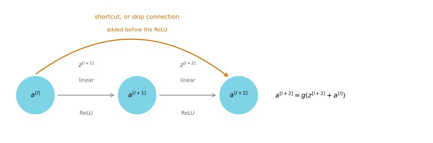
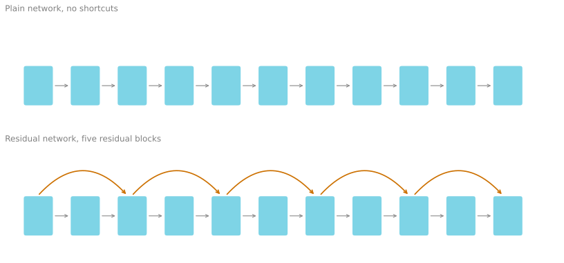
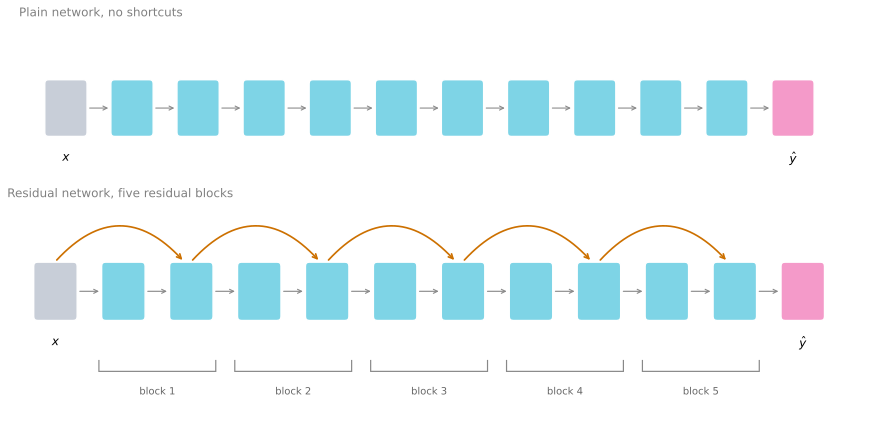

Residual Networks
deep-learning
convolutional-neural-networks
computer-vision
architecture
resnet
skip-connections
How skip connections form a residual block, why stacking them lets you train networks over a hundred layers deep, and why the identity function is the key.
Very deep neural networks are difficult to train, because of vanishing and exploding gradient problems. This page covers skip connections, which let you take the activation from one layer and feed it to another layer much deeper in the network. Using them you can build a ResNet, which makes it possible to train very deep networks, sometimes over a hundred layers.
Residual Block
ResNets are built out of something called a residual block, so it is worth describing that first.
Take two layers of a neural network. You start with the activation \(a^{[l]}\), then get \(a^{[l+1]}\), and two layers later you have \(a^{[l+2]}\). Going through the steps of that computation, you start from \(a^{[l]}\) and apply a linear operation,
\[ z^{[l+1]} = W^{[l+1]} a^{[l]} + b^{[l+1]} \]
then apply the ReLU non-linearity to get
\[ a^{[l+1]} = g(z^{[l+1]}) \]
In the next layer you apply the linear step again,
\[ z^{[l+2]} = W^{[l+2]} a^{[l+1]} + b^{[l+2]} \]
and finally another ReLU, which gives \(a^{[l+2]} = g(z^{[l+2]})\).
In other words, for information to flow from \(a^{[l]}\) to \(a^{[l+2]}\) it has to go through all of those steps. That route is called the main path of this set of layers.
In a residual network you make one change. You take \(a^{[l]}\), copy it, and pass it much further into the network, adding it just before the ReLU non-linearity. That path is called the shortcut. The last equation goes away, and instead
\[ a^{[l+2]} = g\left(z^{[l+2]} + a^{[l]}\right) \]
The addition of \(a^{[l]}\) here is what makes this a residual block.
The shortcut is drawn going into the second layer rather than past it, because it is added before the ReLU non-linearity. Each of these nodes applies a linear function and then a ReLU, and \(a^{[l]}\) is injected after the linear part but before the ReLU part.
Instead of the term shortcut you also hear skip connection, which refers to \(a^{[l]}\) skipping over a layer, or here over almost two layers, in order to pass information deeper into the network. The inventors of ResNet are Kaiming He, Xiangyu Zhang, Shaoqing Ren, and Jian Sun, who introduced it in He, Zhang, Ren, and Sun (2016).
Stacking Blocks Into a Network
What they found is that using residual blocks lets you train much deeper networks. The way you build a ResNet is to take many of these blocks and stack them together.
Start from what the ResNet paper calls a plain network, which is just a stack of layers with no shortcuts. To turn it into a ResNet, you add the skip connections, so that every two layers gets the change described above and becomes a residual block.

Now consider what happens if you train a plain network with a standard optimization algorithm such as gradient descent. Empirically, as you increase the number of layers, the training error decreases for a while and then starts going back up.
In theory that should not happen. Making a network deeper should only help, because the extra layers could always do nothing. In practice a very deep plain network means the optimization algorithm has a much harder time, so the training error gets worse if the network is too deep.
With a ResNet, the training error can keep going down even as the number of layers grows, even past a hundred layers.

By taking these activations, whether \(x\) or an intermediate activation, and allowing them to travel much deeper into the network, ResNets really do help with the vanishing and exploding gradient problems, and let you train much deeper networks without an appreciable loss in performance. At some point this will plateau and deeper stops helping, but ResNets are effective well past the depth where plain networks fail.
Review Questions
1. Where exactly in the two layer block is \(a^{[l]}\) added, and why does the position matter?
TipAnswer
It is added to \(z^{[l+2]}\), that is after the linear step of the second layer but before its ReLU, giving \(a^{[l+2]} = g(z^{[l+2]} + a^{[l]})\). The position is what makes the identity easy to represent. If the shortcut were added after the ReLU, the block would compute \(g(z^{[l+2]}) + a^{[l]}\), and zeroing the weights would leave \(g(0) + a^{[l]} = a^{[l]}\) only by coincidence of \(g(0) = 0\), while the useful property that the whole block collapses to a single ReLU of \(a^{[l]}\) would be lost.
1. In theory a deeper network should never do worse on the training set than a shallower one. Why does a deep plain network do worse in practice?
TipAnswer
The theoretical argument assumes the extra layers can be set to compute the identity, so the deeper network can always reproduce the shallower one. That is a statement about what the network can represent. In practice the optimization algorithm has to find those parameters by gradient descent, and in a very deep plain network learning even the identity turns out to be hard, so the extra layers make the result worse rather than better.
Why Residual Networks Work
The reason skip connections help is worth working through, because it is a short argument and it explains the whole design.
Take an input \(x\) feeding into some big network that outputs \(a^{[l]}\). Now make it deeper by adding two extra layers, and make those two layers a residual block with the shortcut. Assume the network uses ReLU activations throughout, so every activation is greater than or equal to zero, with the possible exception of the input \(x\).
Look at what \(a^{[l+2]}\) becomes. Copying the expression from above,
\[ a^{[l+2]} = g\left(z^{[l+2]} + a^{[l]}\right) = g\left(W^{[l+2]} a^{[l+1]} + b^{[l+2]} + a^{[l]}\right) \]
Now notice something. If you are using L2 regularization, also called weight decay, it will tend to shrink the value of \(W^{[l+2]}\). Suppose it shrinks all the way, so \(W^{[l+2]} = 0\), and for the sake of argument \(b^{[l+2]} = 0\) as well. Then those two terms go away and you are left with
\[ a^{[l+2]} = g\left(a^{[l]}\right) = a^{[l]} \]
The last step holds because \(a^{[l]}\) is itself the output of a ReLU, so it is non-negative, and applying ReLU to a non-negative quantity gives it back unchanged.
What this shows is that the identity function is easy for a residual block to learn. Getting \(a^{[l+2]} = a^{[l]}\) costs nothing more than driving one weight matrix to zero.
That is the whole point. Adding these two layers does not hurt the network’s ability to do as well as the simpler network without them, because it is so easy for the block to learn to copy \(a^{[l]}\) through to \(a^{[l+2]}\).
Of course the goal is not merely to avoid hurting performance. If those hidden units actually learn something useful, the block does better than the identity. What goes wrong in very deep plain networks is that as they get deeper it becomes genuinely difficult to choose parameters that learn even the identity, which is why so many layers end up making the result worse instead of better.
So the main reason residual networks work is that it is so easy for the extra layers to learn the identity function that you are close to guaranteed the block will not hurt performance, and often it helps. Going from a baseline of not hurting, improvement can only follow from there.
Matching the Dimensions
One detail in the addition is worth spelling out. The expression \(z^{[l+2]} + a^{[l]}\) assumes those two have the same dimension. This is why you see so many same convolutions in ResNets, because a same convolution preserves the height and width, which makes the addition of two equal sized volumes straightforward.
When the input and output do have different dimensions, say \(a^{[l]}\) is 128 dimensional while \(z^{[l+2]}\) is 256 dimensional, you add an extra matrix \(W_s\), in this case 256 by 128, so that \(W_s a^{[l]}\) is 256 dimensional and the addition is again between two vectors of matching size. \(W_s\) can be a matrix of parameters that is learned, or a fixed matrix that simply zero pads \(a^{[l]}\) out to 256 dimensions. Either version works.
\[ a^{[l+2]} = g\left(z^{[l+2]} + W_s a^{[l]}\right) \]
Residual Networks on Images
Applied to images, the plain version is a network where you feed in an image and pass it through a number of convolutional layers until eventually you have a softmax output at the end. To turn it into a ResNet you add the skip connections.
A few details matter here. There are a lot of 3 by 3 convolutions, and most of them are 3 by 3 same convolutions, which is exactly why you are adding equal dimension volumes. These are convolutional layers rather than fully connected ones, but because they are same convolutions the dimensions are preserved and \(z^{[l+2]} + a^{[l]}\) makes sense.
As in the earlier networks, there are occasionally pooling layers as well. Whenever one of those appears the dimensions change, and that is where the \(W_s\) adjustment is needed. The usual pattern is convolution, convolution, convolution, pool, repeated, and then a fully connected layer at the end that makes a prediction using a softmax.
The next page covers a different idea, namely what happens when you use a filter that is only one by one.
Review Questions
1. Walk through why setting \(W^{[l+2]} = 0\) and \(b^{[l+2]} = 0\) makes a residual block compute the identity.
TipAnswer
Start from \(a^{[l+2]} = g(W^{[l+2]} a^{[l+1]} + b^{[l+2]} + a^{[l]})\). With both parameters zero, the first two terms vanish, leaving \(a^{[l+2]} = g(a^{[l]})\). Because \(a^{[l]}\) is the output of an earlier ReLU it is non-negative, and ReLU leaves non-negative values unchanged, so \(g(a^{[l]}) = a^{[l]}\). The block passes its input straight through.
1. Why is L2 regularization mentioned in this argument?
TipAnswer
It supplies the pressure that pushes \(W^{[l+2]}\) toward zero. Weight decay shrinks weights that are not earning their keep, so a residual block whose two layers are not contributing anything useful naturally drifts toward the identity rather than toward random noise. The argument does not depend on regularization being present, but it explains why the identity is not just reachable but actively favoured.
1. What is \(W_s\) for, and when do you need it?
TipAnswer
\(W_s\) reshapes \(a^{[l]}\) so it can be added to \(z^{[l+2]}\) when the two have different dimensions, for example 128 against 256. It is a 256 by 128 matrix, either learned along with everything else or fixed to simply zero pad the shorter vector. You need it wherever the shortcut spans a layer that changes the dimensions, which in an image network means wherever a pooling layer or a stride greater than one sits inside the block.
1. Why do residual networks for images use so many same convolutions?
TipAnswer
Because the shortcut adds \(a^{[l]}\) to \(z^{[l+2]}\), and addition needs both to have the same height, width, and channel count. A same convolution preserves the height and width by construction, so consecutive layers inside a block produce matching volumes and the addition works with no adjustment at all. Valid convolutions would shrink the volume at every layer and require a \(W_s\) correction on every shortcut.
1. Does adding a residual block guarantee the network gets better?
TipAnswer
No. The guarantee is weaker and more useful than that. It guarantees the block can easily do no harm, because the identity is cheap to learn. Anything the two layers learn beyond the identity is an improvement on top of that floor. The contrast is with a plain network, where extra depth can actively make the training error worse because even the identity is hard to find.
References
- He, K., Zhang, X., Ren, S., & Sun, J. (2016). Deep residual learning for image recognition. In 2016 IEEE Conference on Computer Vision and Pattern Recognition (CVPR) (pp. 770-778). IEEE. https://doi.org/10.1109/CVPR.2016.90